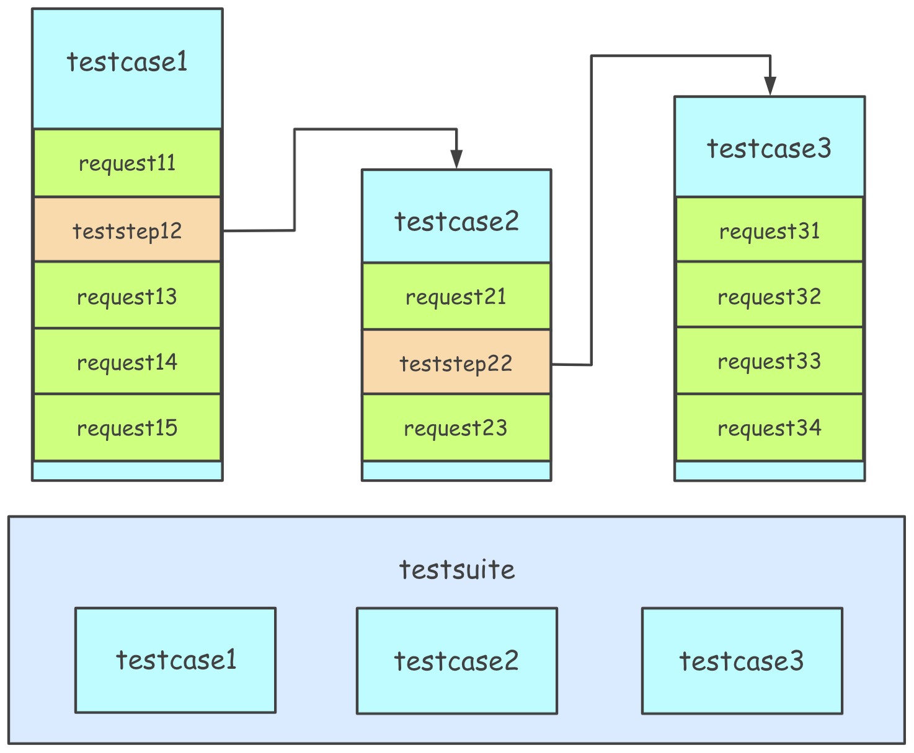

测试用例分层
测试用例分层模型
在自动化测试领域，自动化测试用例的可维护性是极其重要的因素，直接关系到自动化测试能否持续有效地在项目中开展。
概括来说，测试用例分层机制的核心是将接口定义、测试步骤、测试用例、测试场景进行分离，单独进行描述和维护，从而尽可能地减少自动化测试用例的维护成本。
逻辑关系图如下所示：
 同时，强调如下几点核心概念：
- 测试用例（testcase）应该是完整且独立的，每条测试用例应该是都可以独立运行的
- 测试用例是测试步骤（teststep）的 有序 集合，每一个测试步骤对应一个 API 的请求描述
- 测试用例集（testsuite）是测试用例的 无序 集合，集合中的测试用例应该都是相互独立，不存在先后依赖关系的；如果确实存在先后依赖关系，那就需要在测试用例中完成依赖的处理
如果对于上述第三点感觉难以理解，不妨看下上图中的示例：
- testcase1 依赖于 testcase2，那么就可以在测试步骤（teststep12）中对 testcase2 进行引用，然后 testcase1 就是完整且可独立运行的；
- 在 testsuite 中，testcase1 与 testcase2 相互独立，运行顺序就不再有先后依赖关系了。
分层描述详解
理解了测试用例分层模型，接下来我们再来看下在分层模型下，接口、测试用例、测试用例集的描述形式。
接口定义(API)
注意：为了简单，在HttpRunner v2.x中的API概念已经被取消了。你可以将API定义为只有一个请求步骤的测试用例。
测试用例(testcase)
引用测试用例
在测试用例的测试步骤中，可以引用其它测试用例。通过这种方式，可以在避免重复描述的同时，解决测试用例的依赖关系，从而保证每个测试用例都是独立可运行的。
在测试步骤（teststep）中，可通过 testcase 字段引用其它测试用例，引用方式为对应测试用例文件的路径，绝对路径或相对路径均可。推荐使用相对路径，路径基准为项目根目录，即 debugtalk.py 所在的目录路径。
例如，假设有一个用例，实现了对获取 token 功能的测试；在很多其它功能中都会依赖于获取 token 的功能，如果将该功能的测试步骤脚本拷贝到其它功能的测试用例中，那么就会存在大量重复，当需要对该部分进行修改时就需要修改所有地方，显然不便于维护。
比较好的做法是，在其它功能的测试用例（如创建用户）中，引用获取 token 功能的测试用例（testcases/setup.yml）作为一个测试步骤，从而创建用户（"create user and check result."）这个测试用例也变得独立可运行了。
config:
name: "request methods testcase: reference testcase"
id: create_user
base_url: "http://127.0.0.1:5000"
variables:
uid: 9001
device_sn: "TESTCASE_CREATE_XXX"
export: session_token
teststeps:
-
name: create user and check result
variables:
foo1: testcase_ref_bar1
expect_foo1: testcase_ref_bar1
testcase: testcases/demo_testcase_request.yml
export:
- session_token
-
name: check_and_create
variables:
token: $session_token
testcase: testcases/deps/check_and_create.yml
测试用例集(testsuite)
当测试用例数量比较多以后，为了方便管理和实现批量运行，通常需要使用测试用例集来对测试用例进行组织。
在前文的测试用例分层模型中也强调了，测试用例集（testsuite）是测试用例的 无序 集合，集合中的测试用例应该都是相互独立，不存在先后依赖关系的；如果确实存在先后依赖关系，那就需要在测试用例中完成依赖的处理。
因为是无序集合，因此测试用例集的描述形式会与测试用例有些不同，在每个测试用例集文件中，第一层级存在两类字段：
- config: 测试用例集的总体配置参数
- testcases: 值为无序数组，在引用测试用例时，也可以指定variables，实现对引用测试用例中variables的覆盖。
非参数化场景
config:
name: test suite demo
variables: # testsuite config variables
foo1: lalalla
var_a: ${gen_random_string(5)}
var_b: $var_a
base_url: "http://127.0.0.1:5000"
testcases:
-
name: test case 1
variables: # testcase variables
uid: 1000
var_c: ${gen_random_string(5)}
var_d: $var_c
testcase: /path/to/testcase1
export: ["varA", "varB"] # export variables
-
name: test case 2
variables: # testcase variables
uid: 1001
var_c: ${gen_random_string(5)}
var_d: $var_c
testcase: /path/to/testcase2
参数化场景(parameters)
对于参数化场景，可通过parameters实现，描述形式如下所示。
config:
name: test suite demo
variables: # testsuite config variables
foo1: lalalla
base_url: "http://127.0.0.1:5000"
testcases:
-
name: test case 1
variables: # testcase variables
uid: 1000
var_c: ${gen_random_string(5)}
parameters:
uid: [101, 102, 103]
var_c: ["demo1", "demo2", "demo3"]
apkchannel: ${P(data/vip.csv)}
testcase: /path/to/testcase1
参数化后，parameters中的变量将采用笛卡尔积组合形成参数列表，依次覆盖variables中的参数，驱动测试用例的运行。